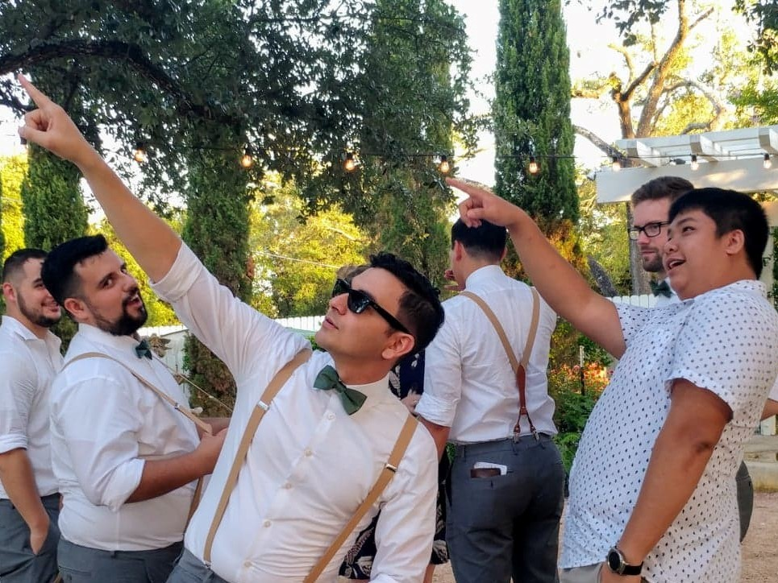

Biography: My name I was born in McAllen, Texas. As a baby, I lived in Reynosa, Tamaulipas, Mexico.
As soon as I was old enough to start school, I moved to Mission, Texas where I lived until the middle of 2nd grade. After Mission, I lived
in Eagle Pass, and then I finally moved to Pleasanton where I graduated high school. After high school I attended Texas A&M University
and graduated with a degree in Computer Engineering. Hobbies include music, exercise, and cooking. My favorite food is smoked baby back
ribs.
A picture of me at my buddy Billy's wedding.

What I hope to gain: I hope to gain the old skills I used to have while in college but lost
due not having programmed extensively in over 2 years. I also hope to learn new technologies in order to broaden my
skills and help become a well rounded individual in job market.
My favorite technology so far is AJAX.